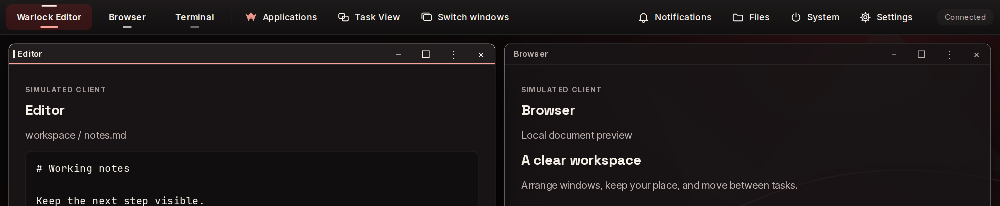

Taskbar
Your apps, one bar away
Pinned and running applications share the taskbar. A pill marks every running app and turns red for the one you are using. Start, Task View, Alt-Tab, notifications, Files, System and Settings sit beside them.
Try the taskbar